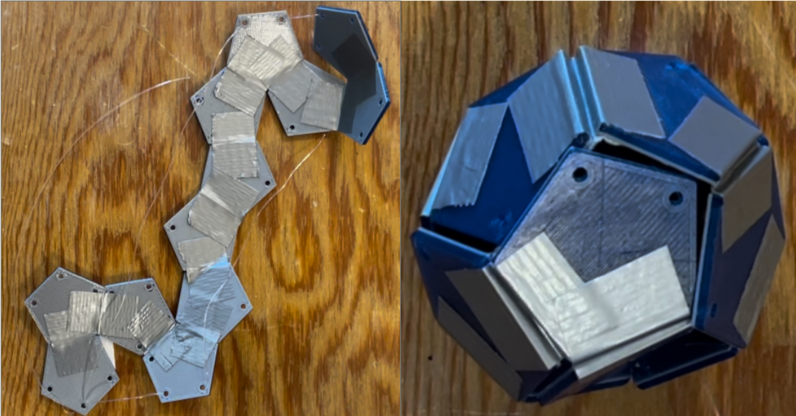
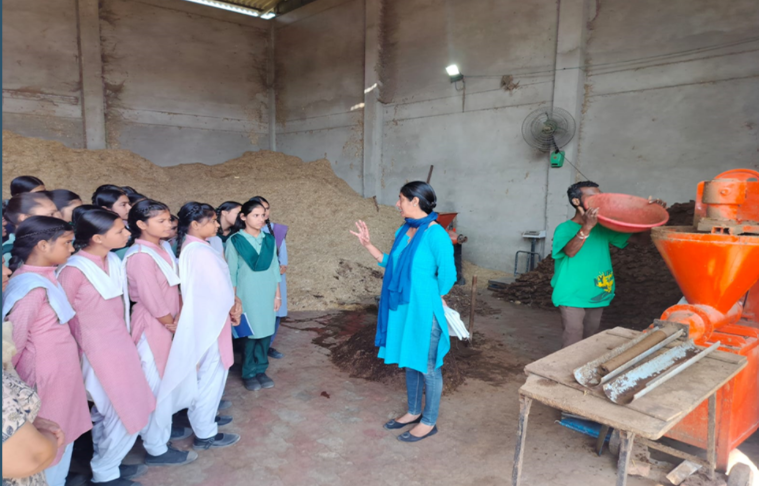
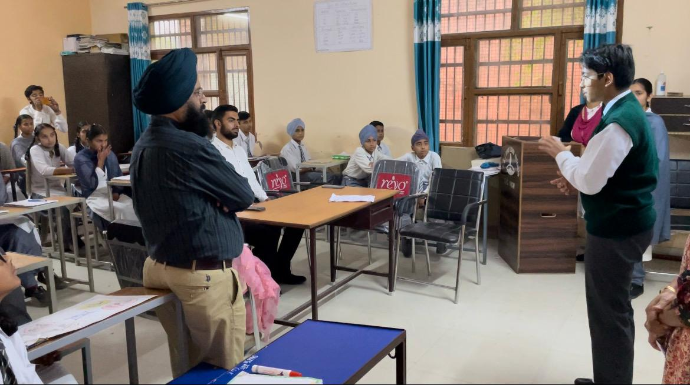

projects / research
Research
Research projects exploring engineering, sustainability, education, policy, and the way ideas move from theory into real-world impact.

Deployable Structures
A research project on turning flat polyhedral nets into 3D structures using hinges, threads, graph threading, and physical fabrication.

Ecologs
A sustainability innovation project developing an alternative cremation fuel using cow dung and coconut shells to reduce firewood use.

NCERT PRAYAAS
A research project studying why science-stream uptake remains low among senior secondary students in Punjab, and what schools and policymakers can do to improve access and confidence.